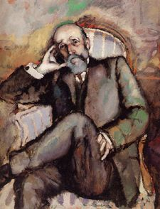

|
|
|
|
|
Accueil |
1910, huile sur toile, 92 x 73 cm
Philadelphia Museum of Art.

« 1909 et 1910 furent les années de ma découverte de Cézanne, qui n'était alors reconnu que d'une minorité. Ce portrait fut exécuté en 1910 et est une illustration typique de mon culte pour Cézanne allié à mon amour filial. »